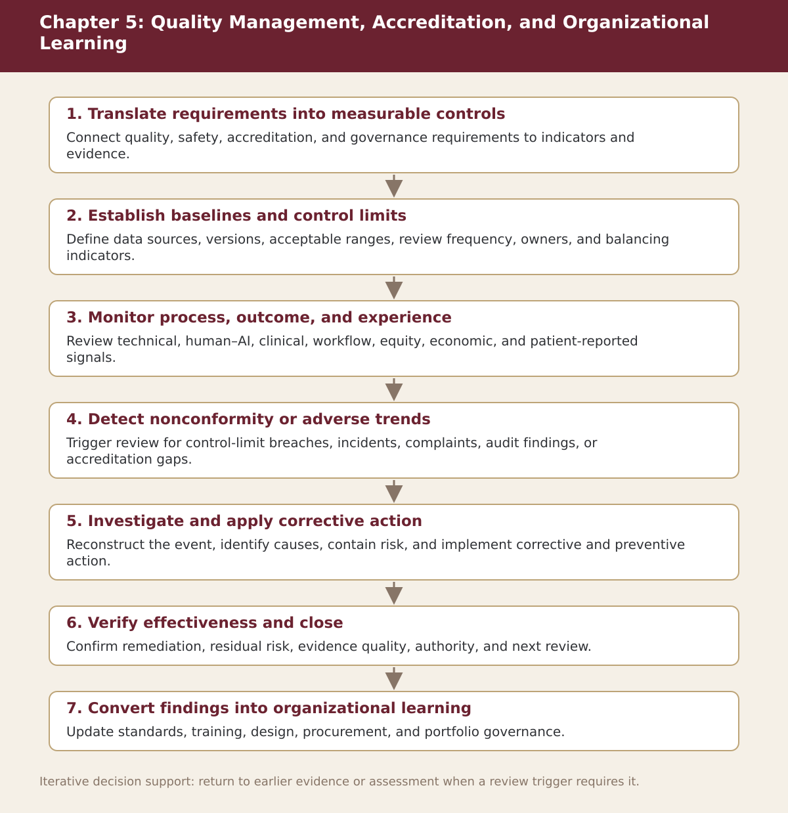

Chapter 5
Quality Management, Accreditation, and Organizational Learning
Chapter-level process map linking the chapter’s decision questions to the companion resources and decision gates.

Process steps
| Step | Stage | Purpose | Required Input | Expected Output | Decision Or Gate |
|---|---|---|---|---|---|
| 1 | Translate requirements into measurable controls | Connect quality, safety, accreditation, and governance requirements to indicators and evidence. | Local evidence and the prior approved step | Versioned record for: Translate requirements into measurable controls | Proceed, revise, escalate, restrict, or stop as appropriate |
| 2 | Establish baselines and control limits | Define data sources, versions, acceptable ranges, review frequency, owners, and balancing indicators. | Local evidence and the prior approved step | Versioned record for: Establish baselines and control limits | Proceed, revise, escalate, restrict, or stop as appropriate |
| 3 | Monitor process, outcome, and experience | Review technical, human–AI, clinical, workflow, equity, economic, and patient-reported signals. | Local evidence and the prior approved step | Versioned record for: Monitor process, outcome, and experience | Proceed, revise, escalate, restrict, or stop as appropriate |
| 4 | Detect nonconformity or adverse trends | Trigger review for control-limit breaches, incidents, complaints, audit findings, or accreditation gaps. | Local evidence and the prior approved step | Versioned record for: Detect nonconformity or adverse trends | Proceed, revise, escalate, restrict, or stop as appropriate |
| 5 | Investigate and apply corrective action | Reconstruct the event, identify causes, contain risk, and implement corrective and preventive action. | Local evidence and the prior approved step | Versioned record for: Investigate and apply corrective action | Proceed, revise, escalate, restrict, or stop as appropriate |
| 6 | Verify effectiveness and close | Confirm remediation, residual risk, evidence quality, authority, and next review. | Local evidence and the prior approved step | Versioned record for: Verify effectiveness and close | Proceed, revise, escalate, restrict, or stop as appropriate |
| 7 | Convert findings into organizational learning | Update standards, training, design, procurement, and portfolio governance. | Local evidence and the prior approved step | Versioned record for: Convert findings into organizational learning | Proceed, revise, escalate, restrict, or stop as appropriate |